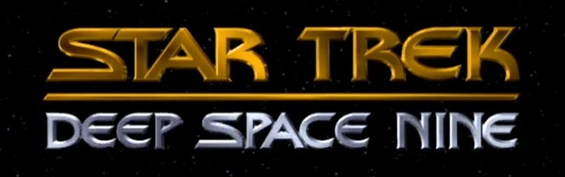
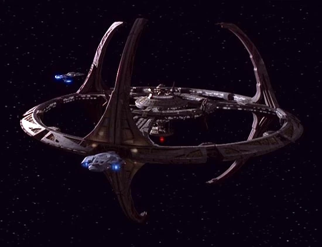
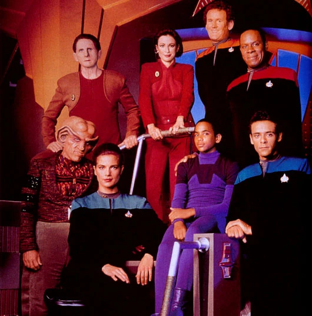

Star Trek: Espacio Profundo Nueve
| Star Trek: Deep Space 9 | |
|---|---|
|  | |
| Abreviatura | DS9 |
| Creadores |
Rick Berman Michael Piller |
| Estudio | Paramount Pictures |
| Fechas de producción | 1993 – 1999 |
| Periodo de emisión | 3 Enero 1993 – 2 Junio 1999 |
| Episodios | 173 (7 Temporadas), 3 son episodios dobles (como fin y comienzo de temporadas) |
| Fragmento temporal | 2369 – 2375 |
|  | |
|
Estación Espacial Espacio Profundo Nueve |
|
|  | |
|
El reparto en las Temporadas 1-3 |
|
| Sumario |
|---|
| 1. Historia |
| 2. Protagonistas |
| 3. Personajes recurrentes |
| 4. Productores ejecutivos |
| 5. Titulos en Español |
Historia
Tras 50 años de ocupación Cardassiana, el planeta Bajor es otra vez libre. Pero los cardassianos dejaron una devastación
social, cultural, ambiental y sobre todo económica, por eso los bajorianos deben pedir la asistencia de la Federación para
poder reconstruirse.
Los cardassianos, tras la derrota, dejaron una estación espacial que usaban para explotar los recursos minerales del planeta.
Por pedido del Gobierno Provisional Bajoriano, la Flota Estelar tomó el control de la administración de la estación, a la que
llamaron Deep Space 9 (el nombre cardassiano era Terok Nor).
Sin embargo, cuando los oficiales de la Flota llegaron a DS9, encontraron que los cardassianos habían vaciado el lugar antes
de irse. La mayoría de los sistemas debieron ser reparados o directamente cambiados. Además, no todos los sectores políticos
de Bajor aceptan la presencia de la Flota, lo que causa un clima político enrarecido.
La estación cuenta con un Centro de Operaciones, un área comercial conocido como Promenade, puertos espaciales y bahías de
servicio para recibir naves espaciales de todos los tamaños. Además posee un anillo habitacional.
En un primer momento, la estación parece ser un pueblo fantasma en el borde del espacio conocido, pero el descubrimiento de
un agujero de gusano estable cercano transformará a DS9 en un punto importante para la comunicación con el Cuadrante Gamma.
Por supuesto, el agujero de gusano traerá consigo nuevas amenazas y peligros para los habitantes del Cuadrante Alfa.
Personajes
- Comandante (luego Capitán) Benjamin Sisko – Avery Brooks
- Primer Oficial Kira Nerys – Nana Visitor
- Oficial Científico Jadzia Dax (hasta 6ta. temp.) – Terry Farrell
- Dr. Julian Bashir – Alexander Siddig
- Jefe de Operaciones Miles O’Brien – Colm Meaney
- Jefe de Seguridad Odo – Rene Auberjonois
- Comandante Worf (desde la 4ta. temp.) – Michael Dorn
- Quark – Armin Shimerman
- Jake Sisko – Cirroc Lofton
- Keiko O’Brien – Rosalind Chao
- Garak – Andrew Robinson
- Gul Dukat – Marc Alaimo
- Rom – Max Grodénchik
- Nog – Aron Eisenberg
- Consejera Ezri Dax (7ma. temp.) – Nicole de Boer
Personajes recurrentes
- Leeta – Chase Masterson
- Vortas Weyoun y Brunt – Jeffrey Combs
- Vic Fontaine – James Darren
- Ishka – Cecily Adams y Andrea Martin
- Zek – Wallace Shawn
- Morn – Mark Allen Shepherd
- legado Damar – Casey Biggs
- Fundadora – Salome Jens
- Canciller del Alto Consejo Klingon Gowron – Robert O’Reilly
- General Martok – J.G. Hertzler
- Hana Hatae – Molly O’Brien
- Kasidy Yates – Penny Johnson
- Michael Eddington – Ken Marshall
- Shakaar – Duncan Regehr
- Varios sin acreditar – David B. Levinson
- Almirante William Ross – Barry Jenner
- Winn Adami – Louise Fletcher
- Vedek Bareil Antos – Philip Anglim
Productores Ejecutivos
- Rick Berman - Productor Ejecutivo
- Rick Berman - Productor Ejecutivo
- Ira Steven Behr - Productor Ejecutivo (1995–1999)
Titulos en Español
- Latinoamérica: Viaje a las Estrellas: Abismo Espacial Nueve (1ª y 2ª Temporada)
- Latinoamérica: Viaje a las Estrellas: Estación Deep Space Nueve (3ª a 7ª Temporada)
- España: Star Trek: Espacio Profundo Nueve